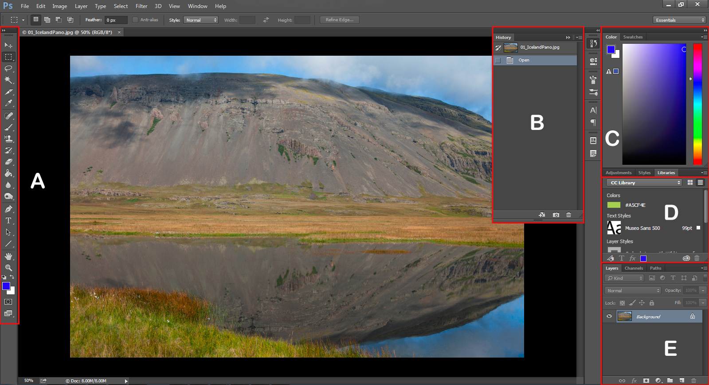
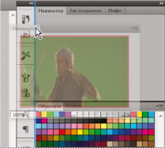
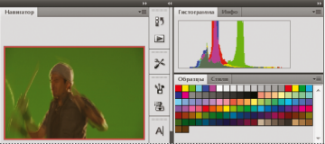
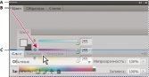
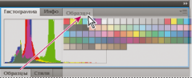
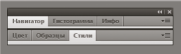
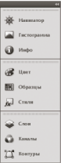
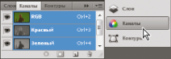

Основные сведения о рабочей среде
Краткий обзор рабочей среды Photoshop

A: Панель «Инструменты» |
B: Панель «История» |
C: Панель «Цвет» |
D: Панель «Библиотеки Creative Cloud» |
E: Панель «Слои»
Видео: основные сведения о рабочей среде
Ознакомьтесь с кратким обзором рабочей среды Photoshop...
Автор: Adobe Systems
Рабочая среда Photoshop
Рабочая среда Photoshop проста в использовании и содержит ряд функций, которые обеспечивают удобство использования:
Различные уровни яркости: щелкните «Редактирование» > «Установки» (Windows) или Photoshop> «Установки» (Mac OS) и выберите образец «Цветовая тема» в разделе «Интерфейс».
Примечание.
Чтобы быстро уменьшить яркость, нажмите Shift + 1; чтобы увеличить яркость, нажмите Shift + 2. В Mac OS также необходимо нажать клавишу FN.
Представления в изображении: получайте актуальные сведения по мере использования избранных инструментов. Представления в изображении показывают размеры выделенного фрагмента, углы трансформирования и т. д. Чтобы изменить размещение представлений, выберите параметр в разделе «Показывать значения трансформирования» в установках интерфейса.
Максимально доступное пространство экрана: нажмите кнопку в нижней части панели инструментов, чтобы переключиться между стандартным и полноэкранным режимами отображения.
Описание рабочей среды
Для создания и управления документами и файлами используются такие элементы интерфейса, как палитры, панели и окна. Расположение этих элементов называется рабочим пространством/средой. Рабочие среды разных приложений Adobe для творчества выглядят одинаково, что дает возможность пользователю легко перемещаться между ними. Пользователь может настроить каждое приложение в соответствии со своими потребностями, выбрав рабочее пространство/среду из набора или создав новое.
Находящаяся в верхней части окна панель приложения содержит переключатель рабочих пространств/сред, меню (только Windows) и другие элементы управления приложением. При работе в некоторых программах Adobe на платформе Mac пользователь может отобразить или скрыть эту панель, используя меню «Окно».
Панель «Инструменты») содержит инструменты для создания и редактирования изображений, графических объектов, элементов страниц и т. д. Связанные инструменты располагаются в группах.
На панели «Управление», в строке Параметры выводятся настройки выбранного в данный момент инструмента.
Окно документа отображает находящийся в работе файл. В окна документа можно поместить закладки, а в некоторых случаях, их можно группировать и закреплять.
Палитры упрощают отслеживание и изменение обрабатываемого объекта. В Photoshop на панели «Слои» выделите слой. Палитры можно группировать, собирать в подборки или закреплять.
Фрейм приложения группирует все элементы рабочей среды в единое интегрированное окно, которое позволяет работать с приложением как с единым целым. При перемещении или изменении размера фрейма приложения или его элементов все элементы внутри него взаимодействуют друг с другом и не перекрываются. Палитры не исчезают при переключении приложений или при случайном щелчке за пределами приложения. При работе с несколькими приложениями можно расположить их рядом на экране или на нескольких мониторах.
Если вы предпочитаете традиционный произвольный интерфейс Mac, то можно отключить фрейм приложения.
Скрытие или отображение всех панелей
Чтобы скрыть или отобразить все палитры и панели, включая панель «Инструменты» и панель «Управление», нажмите клавишу «Tab».
Чтобы скрыть или отобразить все палитры/панели, кроме панели «Инструменты» и панели «Управление», нажмите клавиши Shift+Tab.
Можно временно отобразить скрытые панели, если в установках интерфейса выбран параметр «Автоматически показывать скрытые панели». Переместите курсор к краю окна приложения (Windows®) или к краю монитора (Mac OS®) и наведите его на появившуюся полосу.
Параметры отображения палитр/панелей
Нажмите значок меню палитры/панели в ее правом верхнем углу.
Меню палитры/панели можно открыть, даже если она свернута.
В Photoshop можно изменить размер шрифта для текста панелей и всплывающих подсказок. В настройках интерфейса выберите размер в меню «Размер шрифта меню».
Перенастройка панели «Инструменты»
Инструменты панели «Инструменты» могут располагаться в один или два столбца.
Щелкните двойную стрелку, расположенную в верхней части панели «Инструменты».
Управление окнами и палитрами/панелями
Пользовательское рабочее пространство/среду можно создать, перемещая и изменяя окна документов и палитр/панелей. Можно сохранить несколько рабочих сред и переключаться между ними.
Упорядочение, стыковка и свободное перемещение окон документа
Если открыто более одного файла, окна документов снабжаются закладками.
Для изменения порядка окон документов перетащите закладку окна в новое место в группе.
Для открепления (свободного перемещения или отстыковки) окна документа из группы окон перетащите закладку окна из группы.
Примечание.
В Photoshop можно выбрать меню «Окно» > «Упорядочить» > «Свободно перемещать содержимое окна» для перемещения одного окна документа либо «Окно» > «Упорядочить» > «Свободно перемещать все содержимое окон» для перемещения всех окон документа сразу.
Для прикрепления окна документа к другой группе окон перетащите закладку окна в эту группу.
Чтобы создать группы документов, расположенные каскадно или мозаично, перетащите окно к одной из зон перетаскивания, расположенных вдоль верхнего, нижнего или боковых краев другого окна. Также можно выбрать макет для группы с помощью кнопки «Макет» на панели приложения.
Чтобы переключиться на другой документ в группе со вкладками при перетаскивании выделенной области, перетащите выделенную область на вкладку документа на короткое время.
Прикрепление и открепление палитр/панелей
Док — это набор палитр/панелей или групп палитр/панелей, отображаемых вместе, чаще всего вертикально. Палитры/панели можно прикреплять и откреплять перетаскиванием в область дока или из нее.
Чтобы прикрепить палитру/панель, перетащите ее за вкладку в док и поместите сверху или снизу от других палитр/панелей либо между ними.
Чтобы прикрепить группу палитр/панелей, перетащите ее в док за строку заголовка (пустую одноцветную строку над вкладками).
Чтобы удалить палитру/панель или группу палитр/панелей из дока, перетащите ее из дока, удерживая за вкладку или строку заголовка. Можно перетащить палитру/панель в другой док или сделать плавающей.

При перетаскивании в новый док палитра/панель «Навигатор» выделяется синей вертикальной линией.

Панель «Навигатор» в собственном доке
Можно сделать так, чтобы палитры/панели не заполняли все пространство в доке. Перетащите нижнюю границу дока вверх, чтобы она не соприкасалась с границей рабочего пространства/среды.
Перемещение палитр/панелей
При перемещении палитр/панелей отображаются подсвеченные зоны перетаскивания — зоны, в которые можно поместить палитру/панель. Например, можно переместить палитру/панель выше или ниже в доке. Для этого нужно перетащить ее на узкую синюю зону перетаскивания, которая отображается над другой палитрой/панелью или под ней. Если перетащить палитру/панель в область, не являющуюся зоной перетаскивания, такая палитра/панель станет плавающей.
Примечание.
Активация зоны перетаскивания зависит от позиции указателя мыши (а не положения панели), поэтому если вы ее не видите, попробуйте переместить указатель мыши в то место, где должна быть зона перетаскивания.
Чтобы переместить панель, перетащите ее за вкладку.
Чтобы переместить группу панелей, перетащите строку заголовка.

Зона перетаскивания, обозначенная узкой синей линией, означает прикрепление одиночной палитры/панели «Цвет» над группой палитр/панелей «Слои»
A. Строка заголовка
B. Tab
C. Зона перетаскивания
Чтобы избежать закрепления палитры/панели при перемещении, удерживайте клавишу Ctrl (в Windows) или Command (в Mac OS). Для отмены операции при перемещении палитры/панели нажмите клавишу «Esc».
Добавление и удаление палитр/панелей
Если из дока удалить все палитры/панели, то он исчезнет. Можно создать док, перемещая палитры/панели в правый угол рабочего пространства/среды до появления зоны перетаскивания.
Для удаления палитры/панели щелкните правой кнопкой (Windows) или удерживая клавишу Control (Mac) на ее закладке и выберите «Закрыть» или удалите ее из меню «Окно».
Чтобы добавить палитру/панель, выберите ее в меню «Окно» и закрепите в нужном месте.
Управление группами палитр/панелей
Чтобы добавить панель в группу, перетащите вкладку этой панели в выделенную зону перетаскивания группы.

Добавление панели в группу панелей
Чтобы изменить порядок расположения панелей в группе, перетащите вкладку панели на новое место внутри группы.
Чтобы убрать панель из группы и сделать ее плавающей, перетащите панель за ее вкладку за пределы группы.
Чтобы переместить группу, перетащите панель заголовка (область над вкладками).
Создание ряда плавающих палитр/панелей
При перетаскивании палитры/панели из дока не в зону перетаскивания палитра/панель становится плавающей. Плавающую палитру/панель можно разместить в любом месте рабочего пространства/среды. Плавающие панели или группы панелей можно собрать в одну подборку, тогда при перетаскивании самой верхней строки заголовка они будут перемещаться как одно целое.

Ряд плавающих палитр/панелей
Чтобы создать ряд плавающих палитр/панелей, перетащите палитру/панель за вкладку в зону перетаскивания, расположенную в нижней части другой палитры/панели.
Чтобы изменить порядок палитр/панелей в ряду, перетащите палитру/панель за вкладку вверх или вниз.
Примечание.
Вкладку следует отпустить над тонкой зоной перетаскивания между палитрами/панелями, а не над широкой зоной перетаскивания в строке заголовка.
Чтобы убрать палитру/панель или группу палитр/панелей из ряда и сделать ее плавающей, перетащите палитру/панель за его пределы, удерживая за вкладку.
Изменение размеров палитр/панелей
Чтобы свернуть или развернуть палитру/панель, группу палитр/панелей или ряд палитр/панелей, дважды щелкните вкладку. Также можно дважды щелкнуть область вкладки (пустое пространство рядом с вкладками).
Для изменения размера палитры/панели перетащите любую ее сторону. Размеры некоторых палитр/панелей, например палитры «Цвет» в Photoshop, нельзя изменить таким способом.
Свертывание и развертывание значков панели
Чтобы уменьшить загромождение рабочего пространства/среды, можно свернуть палитры/панели в значки. В некоторых случаях палитры/панели сворачиваются в значки в рабочем пространстве/среде по умолчанию.

Палитры/панели, свернутые в значки

Развернутые палитры/панели
Чтобы свернуть или развернуть все значки панели в столбце, щелкните двойную стрелку в его верхней части.
Чтобы развернуть значок одиночной палитры/панели, щелкните его.
Чтобы изменить размер значков палитры/панели так, чтобы видеть только значки (без подписей), изменяйте ширину дока до исчезновения текста. Чтобы восстановить текст, увеличьте ширину дока.
Чтобы свернуть развернутую палитру/панель в значок, щелкните ее вкладку, значок или двойную стрелку в строке заголовка.
Чтобы добавить плавающую палитру/панель или группу палитр/панелей в док значков, перетащите ее туда за вкладку или строку заголовка (палитры/панели автоматически сворачиваются в значки при добавлении их в док значков).
Чтобы переместить значок палитры/панели (или группу значков палитр/панелей), перетащите значок. Значки панелей можно перетаскивать вниз и вверх в пределах одного дока, в другие доки (где значки будут отображаться в стиле панелей этого дока) либо за пределы дока (где они станут плавающими значками).
Сохранение и переключение рабочих пространств/сред
Если текущий размер и положение панелей сохранены как именованное рабочее пространство/среда, то это рабочее пространство/среду можно восстановить позднее, даже если некоторые палитры/панели были перемещены или закрыты. Названия сохраненных рабочих пространств/сред выводятся в переключателе рабочих пространств/сред на панели приложения.
Сохранение пользовательского рабочего пространства/среды
- Настроив требуемую конфигурацию рабочей среды, выберите Окно > Рабочая среда > Новая рабочая среда.
- Введите имя рабочей среды.
- В меню «Захват» выберите один или несколько вариантов.
Сочетания клавиш
Сохраняет текущий набор комбинаций клавиш (только для Photoshop).
Меню или настройка меню
Сохраняет текущий набор меню.
Отображение рабочих пространств/сред и переключение между ними
Выберите рабочее пространство/среду в переключателе рабочих пространств/сред на панели приложения.
В Photoshop между различными стилями рабочей среды можно быстро переключаться с помощью комбинаций клавиш.
Удаление пользовательской рабочей среды
Выберите «Управление рабочими средами» в переключателе рабочих сред на панели приложения, выберите рабочую среду и нажмите «Удалить».
Выберите «Удалить рабочую среду» в переключателе рабочих сред.
Выберите «Окно» > Рабочее пространство» >«Удалить рабочее пространство», укажите пространство, которое нужно удалить, и нажмите «Удалить».
Восстановление рабочей среды по умолчанию
Выберите рабочую среду «По умолчанию» или «Основная» с помощью переключателя рабочих сред на панели приложения.
Выберите «Окно» > «Рабочая среда» > «Сброс» [имя рабочей среды].
Восстановление сохраненной рабочей среды
В Photoshop рабочие среды отображаются автоматически в порядке, который использовался при последнем запуске. Однако можно восстановить исходное (сохраненное) расположение панелей.
Для восстановления отдельной рабочей среды выберите меню «Окно» > «Рабочая среда» > «Сбросить имя_рабочей_среды.
Для восстановления всех рабочих сред, установленных с Photoshop, нажмите «Восстановление рабочих сред по умолчанию» в настройках интерфейса.
Переупорядочить рабочие среды на панели приложения можно с помощью перетаскивания.